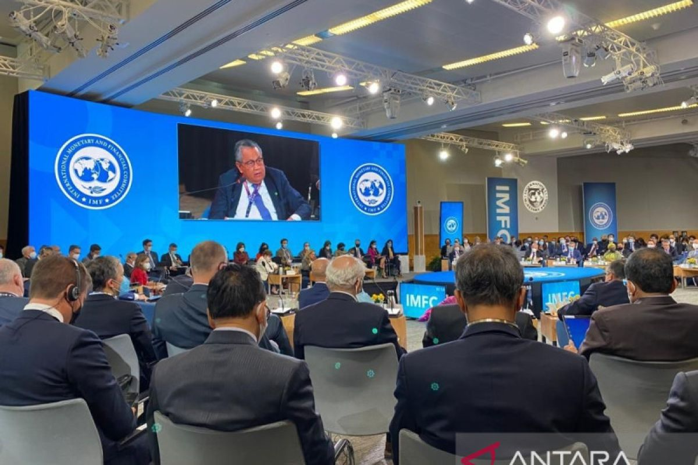
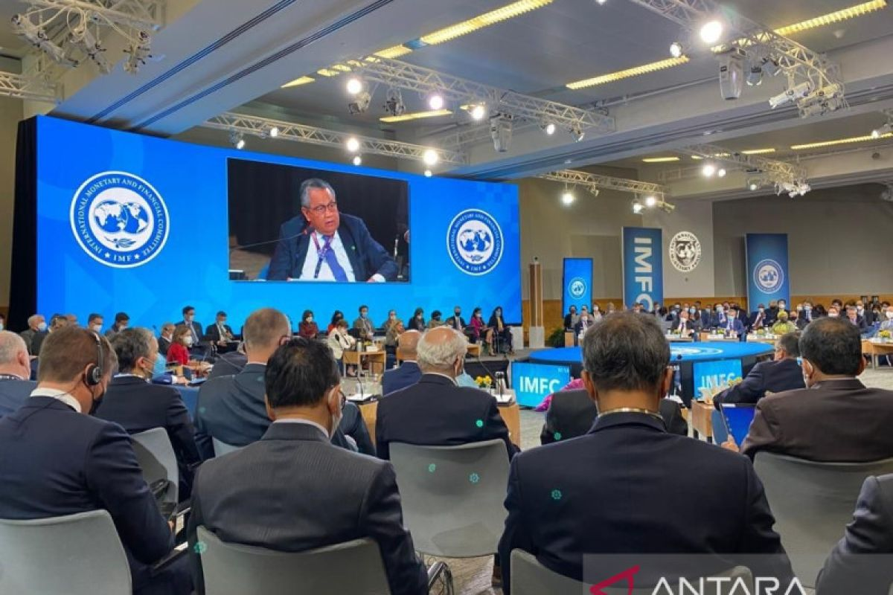

Seringkali kita mendengar kata “kerja sama” tapi apa sih arti dari kata itu, menurut KBBI kerja sama dapat diartikan sebagai kegiatan yang dilakukan oleh beberapa orang contohnya lembaga pemerintahan untuk mencapai tujuan bersama. Menurut Charlie H. Cooley, kerja sama akan timbul jika seseorang atau kelompok menyadari bahwa mereka memiliki kepentingan yang sama pada waktu yang bersamaan, kemudian mereka memiliki cukup pengetahuan dan kesadaran di dalam diri sendiri untuk memenuhi kepentingan tersebut.
Kerja sama merupakan cakupan yang sangat luas bisa dimulai dari skala yang kecil seperti kerja kelompok yang kita lakukan sehari - hari di sekolah sampai ke skala yang besar seperti kerja sama antar negara - negara untuk keuntungan bersama. Kerja sama ada banyak sekali jenisnya diantaranya ada kerja sama bilateral, regional, multilateral, dan international.
Kerja sama bilateral merupakan kerja sama yang dilakukan oleh 2 negara, yang bertujuan untuk membina hubungan dan menjalin kerja sama dalam berbagai bidang. Kerja sama dalam bidang bilateral biasanya dilakukan antara 2 negara yang memiliki hubungan diplomatic. Indonesia sendiri memiliki hubungan kerja sama bilateral dengan sebanyak 162 negara. Kerja sama bilateral dapat tercapai setelah kedua negara menandatangani sebuah persetujuan yang akan dijadikan sebagai acuan dalam kerja sama tersebut.
Contohnya adalah persetujuan Indonesia-Japan Economic Partnership Agreement ( IJEPA ) antara Indonesia dan Jepang yang didirikan sejak tahun 2008. Selain itu ada juga kerja sama Indonesia dengan Malaysia dalam bidang pendidikan dengan tujuan yaitu memperbanyak jumlah sekolah Indonesia di wilayah Malaysia serta memperbanyak jumlah tenaga pengajar Indonesia pada sekolah - sekolah tersebut dan yang pastinya mengadakan program pertukaran dari Indonesia ke Malaysia dan sebaliknya setiap tahun.
Kerja sama regional merupakan kerja sama antara negara - negara yang ada di dalam sebuah wilayah atau suatu kawasan. Kerja sama regional seringkali difokuskan pada hubungan para negara dengan lokasinya masing - masing berdasarkan alasan historis, geografis, teknik, sumber daya alam, pemasaran, dan banyak lagi. Indonesia terlibat dalam 4 kerja sama regional umumnya pada kawasan Asia Tenggara.
Salah satu contohnya yang paling umum adalah Association of Southeast Asian Nations ( ASEAN ) sejak tahun 1967 tepatnya di Bangkok. Alasan negara - negara di kawasan Asia Tenggara membuat keputusan untuk bekerja sama secara regional adalah adanya keinginan para negara tersebut untuk kuat secara bersama dengan itu mereka dapat menciptakan negara yang damai, aman,sejahtera, dan stabil.
Kerja sama multilateral merupakan kerja sama yang dilakukan dua negara atau lebih dengan lembaga internasional. Kerja sama multilateral umumnya hanya mengatur hal - hal yang menyangkut kepentingan umum dan bersifat terbuka dan tidak dirahasiakan seperti kerja sama pemerintahan pada umumnya. Kerja sama multilateral yang melibati Indonesia kurang lebih ada sekitar 15 kerja sama.
Beberapa contohnya adalah kerja sama multilateral Indonesia pada bidang ekonomi seperti World Trade ORganization ( WTO ) yang memiliki tugas untuk menata serta memfasilitasi lalu lintas perdagangan antar negara, selain itu WTO harus mengatasi perselisihan perdagangan antar negara. Selain WTO ada juga ( IMF ) International Monetary Fund yang bertujuan untuk menciptakan stabilitas dalam sistem keuangan secara internasional.
Kerjasama internasional merupakan kerja sama yang dilakukan oleh dua atau lebih negara untuk mencapai tujuan bersama tertentu. Kerja sama internasional bisa mencakup ketiga kerja sama yang sudah dijelaskan sebelumnya yaitu kerja sama bilateral, multilateral, dan regional.
Contoh dari kerja sama internasional adalah semua contoh - contoh yang telah disebutkan seperti ASEAN, WTO, IMF, dan masih banyak lagi. Masing - masing kerja sama ini tentunya memiliki tujuan tersendirinya masing - masing dan keterlibatan Indonesia di dalam banyak kerja sama ini menunjukan keinginan Indonesia untuk mencapai tujuan - tujuan tersebut juga demi negara dan warga kita sendiri. Dengan bantuan dari negara lain kekayaan dan kekurangan dari masing - masing negara bisa diatasi dengan solusi yang terbaik.